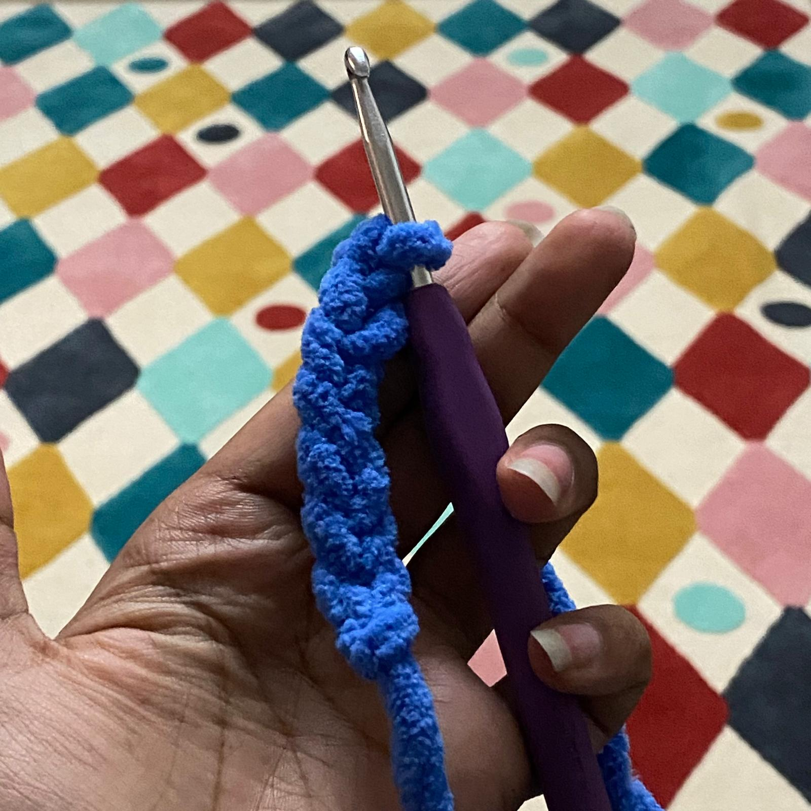

|

|
In order to make clothes such as scarves and sweaters it is increadibly important you know how to chain-stitch.
Chain stitching with a number of steps.
1. Create a slip knot. This can be done by wrapping the yarn to make a loop in the shape of an “o”. Then you feed the end with the side of the yarn ball into the loop and pull until tight.
2. Insert your hook into your slip knot and then adgust how tight it is by testing which side is loose, and gently tugging it until it fits the crochet hook, but isnt tight.
3. Take some yarn from the side with yarn and loop it around your hook from behind.
4. Pull the yarn through your slip knot. You now have a single chain stitch.
5. Repeat the process of wrapping and pulling until your chain stitch is the desired length.
This may seem hard and slow at first but over time it’ll turn into muscle memory!
|